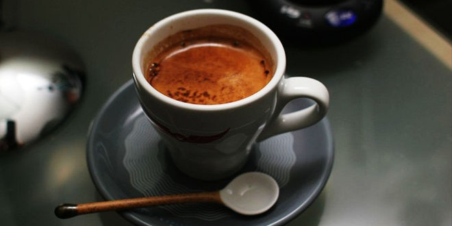
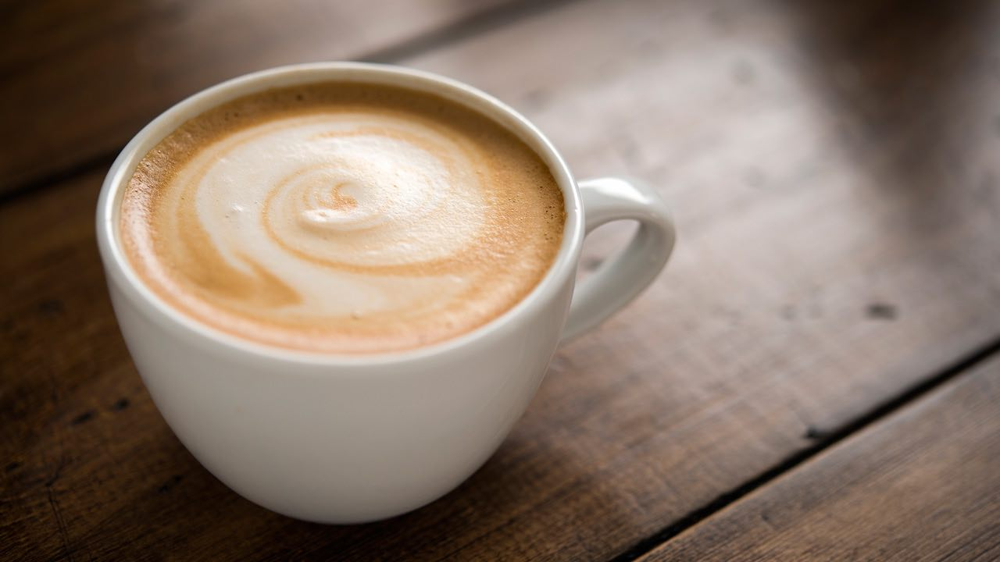

Kahve bitkisinin kökenlerinin Etiyopya'ya dayandığı, içecek olarak kullanımının ise ilk Güney Arabistan'da gerçekleştirildiği düşünülmektedir. 17. yüzyılda Venedikli tüccarlar yolu ile Avrupaya taşınmış kahve, kısa zamanda kıtaya yayılmıştır. Amerika, Asya ve Afrika kıtalarında gerçekleştirilmiş Avrupa koloniciliği sonucunda dünyanın çeşitli yerlerinde kahve plantasyonları kurulmuş, kahve dünyada geniş çapta tüketilen bir içecek halini almıştır. Kahvenin günümüzde Brezilya, Vietnam ve Kolombiya başta olmak üzere tropikal iklimli ve yükseltili bölgelerde ağırlıklı olarak tarımı yapılmaktadır.
Kahve ağacının ilk bulunduğu yer olan Habeşistan'ın Kaffa yöresinin Arapça karşılığı "qahwah"dır. Araplar bugün bilinen kahveyi henüz tanımıyorken kelime keyif veren içki, şarap anlamında kullanmaktaydı. Bugünkü anlamını 14. yüzyılda kazanmaya başlamıştır. Bu Türkçede "kahve"ye dönüşmüş, buradan da Avrupa'da café, caffe, koffie, coffee, koffie, Kaffee şekline gelmiştir.
Bol yağışların ardından kahve ağacı, yılda iki ya da üç kez beyaz çiçekler açar. Güçlü ve keskin kokuları kimi zaman yasemini kimi zaman portakal ağacının çiçeğini andırır. Yeni çiçek vermeye başlamış bir ağaç, dallarında bir yılda toplam 20-30 bin çiçek taşır. Kahve çiçekleri açtıktan birkaç saat sonra solmaya başlar ve yavaşça meyve olmak için hazırlanırlar.
Kahve meyvesi; büyüklüğü, şekli ve rengindeki benzerlikler nedeniyle "kahve kirazı" olarak da adlandırılmaktadır. İçinde ince iki çekirdek bulunur. Çekirdeklerin birbirine bakan tarafı düz, dış tarafı yuvarlaktır. Her çekirdeğin içinde aynı biçimde bir tohum (kahve tanesi) vardır. Tanenin düz yüzeyinde, içi sert bir besi dokusu ile dolu olan, derin bir çizgi yer alır, Besi dokusunun dış tabakası ince bir zarla kaplıdır. Zarın dışında ise daha sert bir kabuk vardır. Eğer kahve çekirdeği daha sonra tohum olarak kullanılacaksa çekirdek kabuktan ayrılmaz. Bazı kahve ağaçlarının meyvesinden iki yerine bir tane çekirdek çıkar. Bu çekirdek (peaberry), diğerlerine göre çok daha yuvarlak bir şekle sahiptir. Tek olarak çıkan çekirdekler, diğerlerinden ayrılarak üretim sürecinden geçirilir. Genellikle fiyatları da normal kahveye göre çok daha pahalıdır.
Kahvenin, Yengeç ve Oğlak dönencesi arasında tropikal iklimli bölgelerde ağırlıklı olarak tarımı yapılmaktadır. Toprak, aldığı su, güneşlenme zamanı, nem gibi faktörler kahvenin tadını ve aromasını değiştirmektedir. Eğer kahve yanardağın eteğinde yetiştiriliyorsa kül kokuyor. Muz ağaçlarının gölgesinde yetişiyorsa daha aromatik bir tadı oluyor.[kaynak belirtilmeli] Brezilya kahve üretiminde dünya birincisidir. Onu Vietnam ve Kolombiya ülkeleri takip eder.
1.adım : Sıcak suyu kaynatınız.
2.adım : Su kaynadıktan sonra 1 dakika bekleyiniz. Bir anda kahvenizi sıcak suyun içine atmayınız.
3.adım : 1 yemek kaşığı kahveyi süpürerek french press makinenize sıcak su ve kahveyi ilave ederek 4 dakika bekleyiniz.
KAHVENİZ HAZIR :)